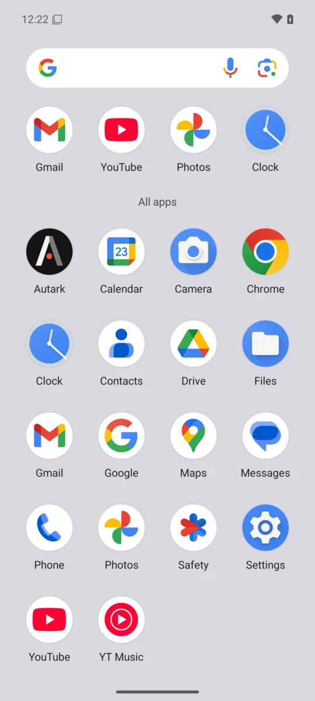
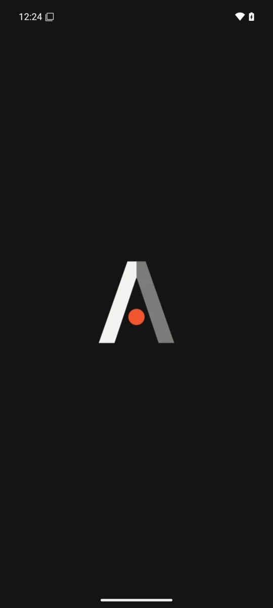
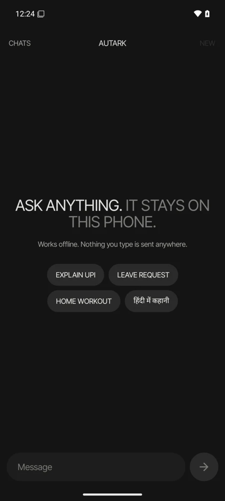
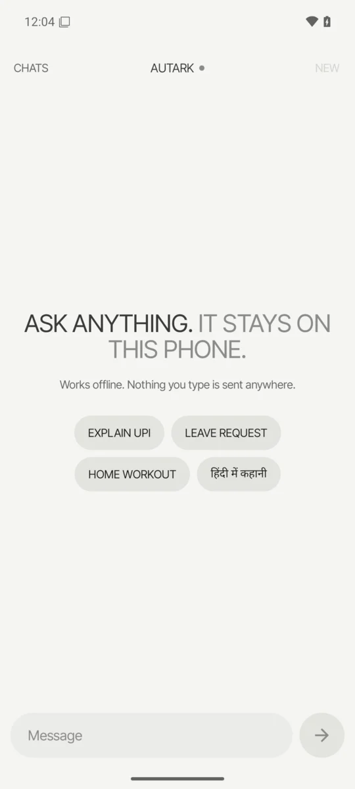

The mark
A private AI that lives on your phone.
It works offline. No account, no cloud, and nothing you type ever leaves this phone.
01
On the phone. Screens from the emulator.




02
How it's built. The wordmark's own A.
Night#141414
Night ink#F2F2F0
Night grey#7C7C79
Orange#F0552E
03